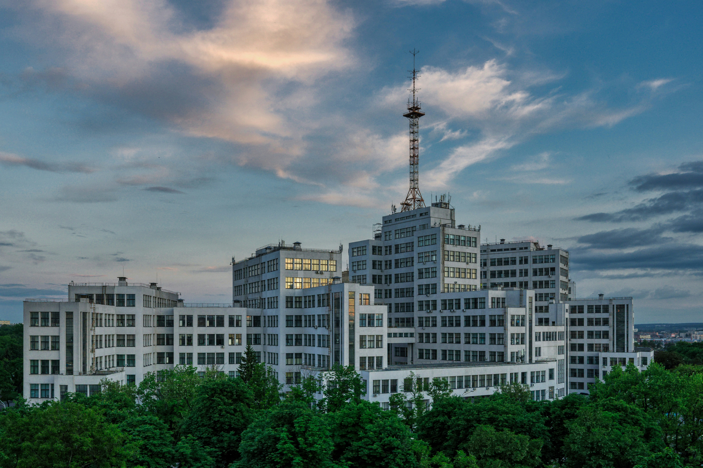

Ukraine's Cultural Heart
Discover Kharkiv
Where centuries of history meet modern elegance.
Experience the resilient spirit of Ukraine's most captivating city.

WHY KHARKIV?
Kharkiv, Ukraine's second city
Kharkiv is a vibrant metropolis in northeastern Ukraine with a rich cultural and intellectual heritage. Founded in 1654, it served as the first capital of Soviet Ukraine and remains a major hub of education, science, and the arts.
Beyond its grand Soviet-era architecture and leafy boulevards, Kharkiv is a city of contrasts — lively student cafés and contemporary galleries sit beside ornate opera houses and sprawling Freedom Square, one of the largest in Europe. The city's resilient spirit shines through in its people, its street art, and its thriving creative scene.
CAFÉS
My favorite cafés in Kharkiv


Trattoria Sicilia
is a family-owned restaurant offering traditional Italian and Mediterranean dishes. The menu features thin-crust pizzas and homemade pastas, prepared with fresh, natural ingredients. The bar offers coffee cocktails made with Lavazza coffee. The restaurant provides a cozy atmosphere with both indoor and outdoor seating options, including a summer terrace.
Address:
Nauky Ave, 19А
What I like about it
One of the best spots in Kharkiv — if you go at any time of day there will be something delicious on the menu!


Farsch Grill Diner
is a delightful spot in Kharkiv that truly caters to a variety of tastes, making it an excellent choice for anyone visiting the city. The cozy atmosphere and attentive service made my experience even more enjoyable.
Address:
Yaroslava Mudrogo St, 29
What I like about it
There is good and variety interior. Tables fit for both company and family. Tasty hamburgers and nice service.


Yapiko Restraunt
Restoran Yaposhka Na Ul. Korolenka is a recent addition to the renowned family of similar eateries in the city. It commenced operations in June 2020 and boasts an impressive interior design characterized by an environmentally friendly light theme, creating a spacious dining area.
Address:
Nauky Ave, 11
What I like about it
Incredibly tasty sushi, pizza and other delicious things with reasonable prices!
GALLERY
My photos from Kharkiv